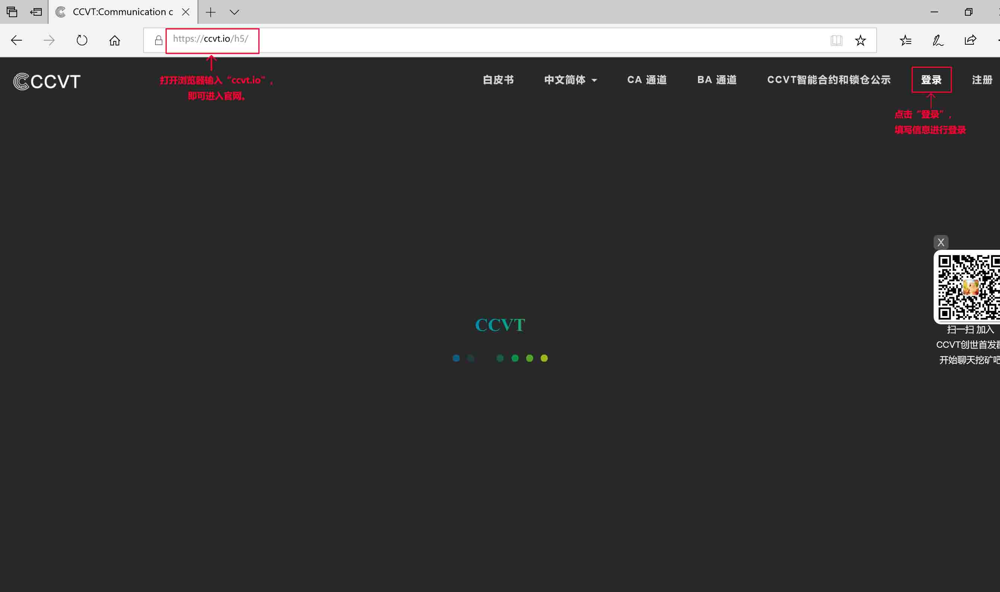
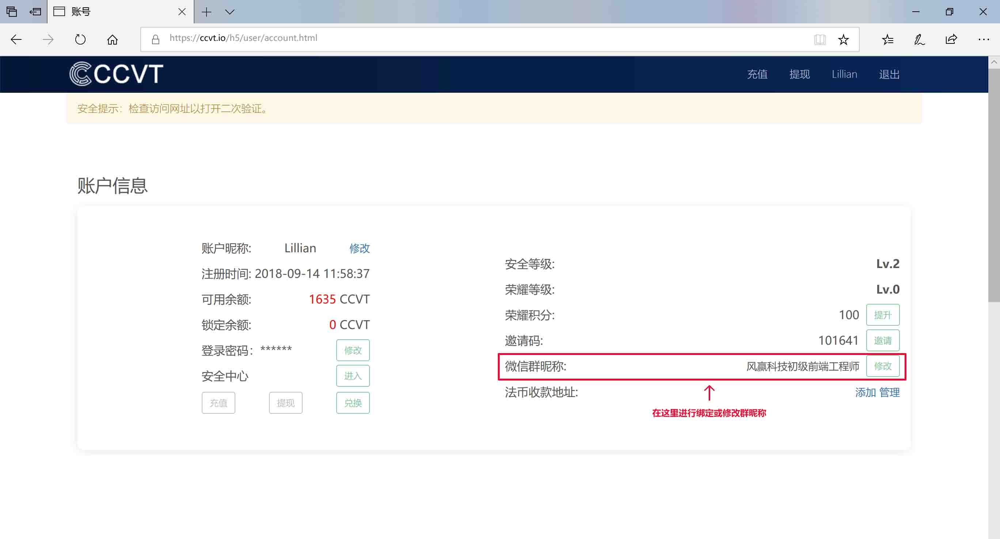
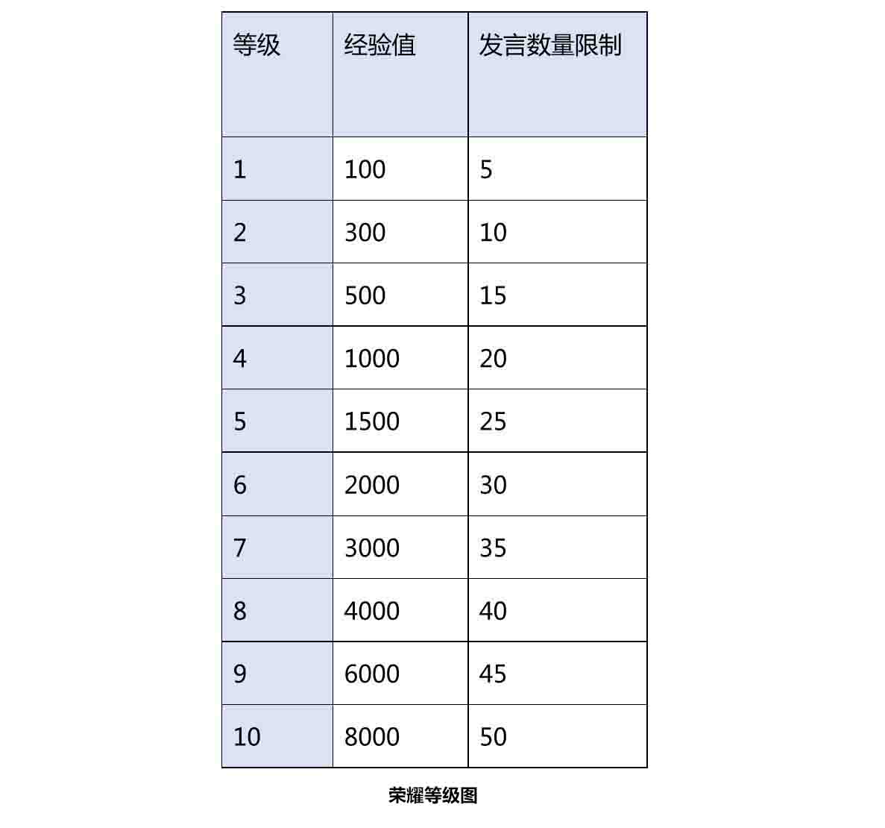
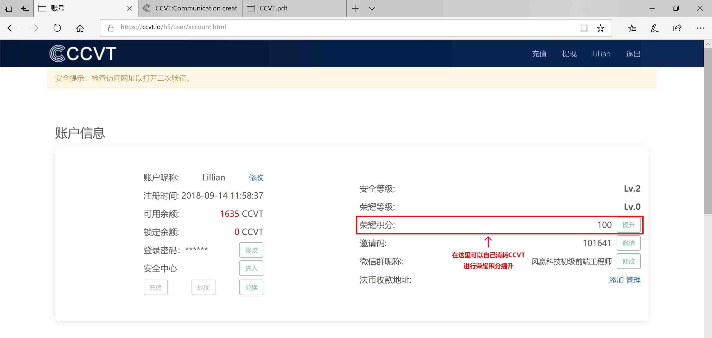

Q:什么是CCVT，为什么叫CCVT？
CCVT是基于以太坊ERC20标准发行的智能合约通证，CCVT来源于沟通创造价值这句话，智能合约令牌英文为CommunicationCreatesValueToken，简称CCVT。
Q:是不是只要微信群里说话就算挖矿并能获得CCVT？
A:只有在CCVT_AI机器人值守的群里发言，并被机器人记录到才有可能获得CCVT。同时你需要ccvt.io上注册账号，并绑定你在微信群的群昵称才行。
Q:怎么注册CCVT？
A:官网首页CCVT.io注册，也可以是朋友的邀请链接或邀请二维码。
Q:在哪里绑定微信昵称？
A:ccvt.io - 账户登陆 - 微信昵称绑定。


Q:为什么我在群里发言了，但奖励的CCVT还没有到账？
A:沟通奖励的CCVT在每天22点之后由CCVT_AI统一结算，并发放到您的CCVT账户里。
Q:每天聊天可以获得多少CCVT？
A:在创始首发群里，荣耀0级的用户每次发言可获得10CCVT，每天最多可以获得50CCVT，荣耀等级越高，每天可以获得CCVT的上限越高。
Q:为什么我发言了5次，奖励却只得到30CCVT？
A:CCVT_AI机器人会判定留言质量，对于灌水留言，会自动过滤。
Q:CCVT有什么用？
A:可以通过赞，踩操作提升或摧毁其他发言人的荣耀积分。
Q:如何提升荣耀等级？
A:荣耀等级随CCVT的智能合约解锁时间点，所有CCVT用户每28天有一次提升荣耀等级的机会。该时间点荣耀积分满足条件的用户可以提升且只能提升一级。
CCVT首次解锁时间点为2018年11月30日晚8点，即时将诞生全球首批CCVT荣耀等级一级的用户。
Q:荣耀升级条件？
A:从0级升级到1级需要100点荣耀积分，其它等级如图。

Q:荣耀积分怎么获得？
A:获得一个点赞，荣耀积分+1，获得一个点踩，荣耀积分-1
Q:点赞和点踩在哪里操作？
A:在CCVT_AI机器人值守的群里每天都会公布昨日聊天记录，点开链接，登陆即可点赞和点踩。
Q:是否可以给自己点赞？
A:可以在登录CCVT.io在自己账户上直接操作。

Q:点赞和点踩是否消耗CCVT？
A:是的，账户余额不足，或者超出每天赞踩上限，则不能进行点赞和点踩的操作。
Q:每邀请一个新用户注册获得50CCVT的奖励什么时候结束？
A:具体以官方宣布为准，目前依然有效。
Q:CCVT是否会上交易所？
A:CCVT依托于Hivebanks架构，本身具备类似交易所的功能，为鼓励市场自由为CCVT定价，预定将于19年1月，2月分别登陆两家以上的交易所。